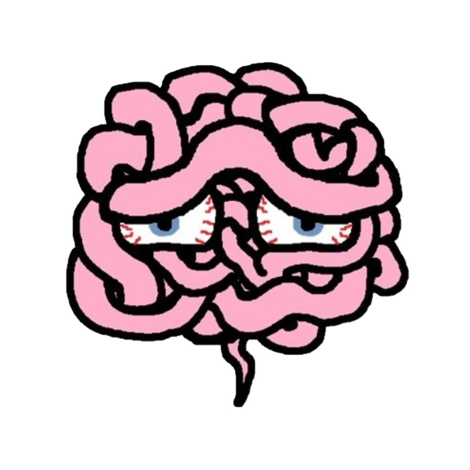

En el juego hay varias emociones que componen los personajes jugables del jugador. Cada emoción tiene diferentes ataques y efectos. Constarán de un ataque y una habilidad básica, y una definitiva.
El objetivo es derrotar enemigos usando las diferentes emociones. Los enemigos son los demonios internos que el personaje tiene dentro de su cabeza, ya que se encuentra luchando contra sus otras personalidades y pensamientos.
La elección de las emociones ocurre (dos por definir) antes de comenzar el combate. Pueden ser cambiadas en cualquier momento del combate pero no podrán efectuar ninguna acción el turno en el que salen. Al morir una emoción, el jugador podrá elegir la que va a sacar para sustituirla.
Tras los combates investigaremos las partes de nuestro cerebro y podremos encontrar distintas salas. Entre ellas la del sistema límbico (donde se originan las emociones): en esta sala podremos cultivar distintas emociones. Al cultivar se nos pedirá un requisito para que esa emoción gane fuerza y al completarse se mejorará dicha habilidad.
Durante los combates el jugador presentará una barra de locura que irá aumentando y decreciendo durante el transcurso de la partida, por usar habilidades y/o por decisiones en la exploración de mazmorras.
Somos una pequeña desarrolladora que esta empezando en el mundo de los juegos indie.
Integrantes:
CHEN, ZIMIN
LADRÓN DE GUEVARA JIMÉNEZ, JORGE-GINÉS
OLTEAN, GABRIEL ADRIAN
SÁNCHEZ LÓPEZ, TRISTÁN
Si quereis conocernos mejor no dudeis en seguirnos en redes